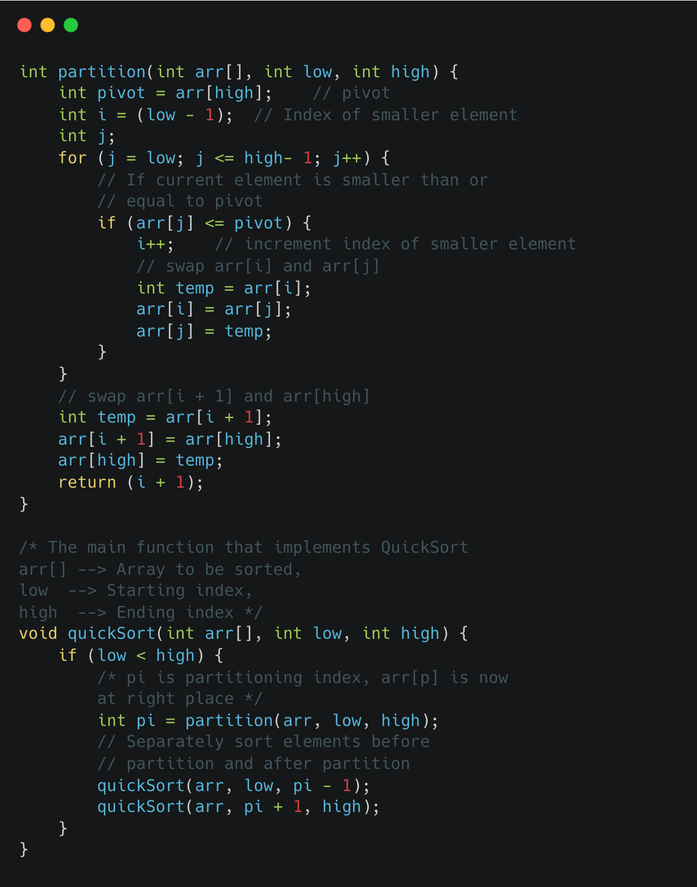

QuickSort is a divide-and-conquer algorithm for sorting. It works by partitioning the input array into two smaller sub-arrays, one containing elements that are less than a chosen "pivot" element, and the other containing elements that are greater than or equal to the pivot. The pivot is typically chosen as the last element in the array, but it can be chosen randomly or from any other position in the array as well.
The algorithm then recursively sorts the two sub-arrays, and combines them back together in the correct order.
Here's an example of how the quicksort algorithm works in C:
The partition function is the core of quicksort and it uses the pivot element to partition the array into two parts: one part containing elements less than the pivot and the other part containing elements greater than or equal to the pivot.
The quicksort function then recursively calls itself on the two partitions, one before the pivot and one after the pivot.
The time complexity of quicksort is O(n log n) on average, but it can be O(n^2) in the worst case when the pivot is chosen poorly. However, this can be avoided by choosing a good pivot, such as the median of the array.
quicksort is an unstable sort, meaning it may not preserve the relative order of elements with equal keys. It's also an in-place sort, meaning it doesn't require any extra space.
It's a fast and efficient sorting algorithm, especially for large data sets. It's also widely used in practice, and is the sorting algorithm used in the C standard library qsort() function.